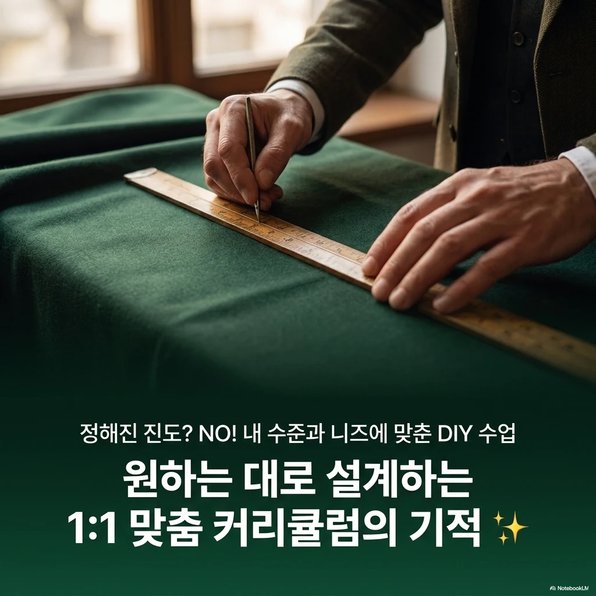
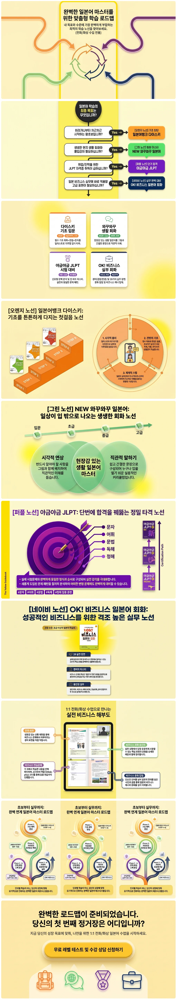

TS재팬 · 1:1 화상수업
경기 구리역
맨투맨 일본어과외.
나의 목표에서 시작하는 일본어.
첫 히라가나부터, 일과 일상에 쓰는 한마디까지.
기초·생활회화·JLPT·비즈니스 일본어 중 필요한 과정을 살펴보고, 현재 수준과 목표에 맞는 1:1 화상수업을 상담해보세요.
경기 · 대표 노선 8호선
1:1 화상수업 안내입니다. 해당 역 주변의 오프라인 교실 안내가 아닙니다.

나에게 맞는 학습 과정
일본어를 배우는 이유가
다르면, 출발점도 다르게.
처음 배우는 기초, 여행과 일상의 대화, JLPT와 업무 표현까지. 지금 필요한 내용을 중심으로 과정을 살펴보세요.
일본어뱅크 다이스키
- 히라가나·가타카나와 기초 표현
- 회화·문법·독해·작문·한자 학습
- STEP 1–4로 이어지는 단계별 구성
추천 대상 · 일본어를 처음 배우거나 기초부터 다시 정리하고 싶은 분
1:1 학습 상담
공부할 장소는 익숙하게,
배울 내용은 나에게 맞게.
학습의 출발점은 사람마다 다릅니다. 일본어를 처음 접하는지, 기초는 알지만 말하기가 어려운지, 시험을 앞두고 있는지 먼저 알려주세요.
- 01 현재 수준 확인
- 배운 경험과 편하게 사용할 수 있는 표현부터 확인합니다.
- 02 학습 목표 정리
- 기초, 생활회화, JLPT, 비즈니스 중 필요한 방향을 살펴봅니다.
- 03 1:1 수업 상담
- 목표에 맞는 과정과 수업 가능 시간을 상담으로 확인합니다.
학습 상담 안내
생활 일정에 맞춰 준비하는 일본어
일본어 학습 상담.
경기 구리역에서 일본어 수업을 알아보고 있다면, 배우려는 목적과 현재 수준을 먼저 정리해보세요. 꾸준히 일본어를 배우고 싶다면 목표와 함께 평소의 학습 여건도 살펴보세요. 글자를 처음 배우는지, 예전에 공부한 문법을 다시 정리하고 싶은지, 짧은 대화를 이어가고 싶은지에 따라 출발점이 달라집니다. 수업에 참여할 수 있는 공간과 희망 시간을 정리하고, 무리 없이 병행하고 싶은 다른 일정도 함께 알려주세요. 구체적인 수업 시간과 진행 조건은 상담에서 확인할 수 있습니다.
과정을 고르기 전에
화상수업은 교실로 이동하는 대신 인터넷이 연결되고 대화할 수 있는 공간이 필요합니다. 집이라는 이유만으로 어디서나 편하게 수업할 수 있다고 가정하기보다 소음, 접속 환경, 집중할 시간을 먼저 확인해보세요.
상담할 때 알려주세요
- 처음 학습인지 재시작인지와 가장 배우고 싶은 내용
- 대화할 수 있는 공간과 인터넷 접속 환경
- 가능한 요일·시간 및 일정 협의가 필요한 부분
희망 시간만 정해두고 상담을 신청해도 되나요?
네. 가능한 요일과 시간을 남기고 현재 학습 경험을 함께 알려주세요. 희망 시간의 실제 수업 가능 여부와 진행 조건은 상담에서 확인해야 하며, 모든 시간대가 제공된다는 뜻은 아닙니다.
QUESTIONS & ANSWERS
시작하기 전,
궁금한 이야기.
일본어를 전혀 몰라도 시작할 수 있나요?
네. 히라가나와 가타카나부터 배우는 기초 과정을 상담할 수 있습니다. 일본어뱅크 다이스키 교재로 글자, 필수 표현, 회화와 문법을 단계별로 학습하는 구성입니다.
생활회화와 JLPT를 각각 준비할 수 있나요?
생활회화는 NEW 와꾸와꾸 일본어, JLPT는 야금야금 JLPT 과정으로 안내합니다. 말하기와 자격증 등 학습 목적에 맞춰 상담 시 필요한 과정을 확인해주세요.
화상수업은 어떻게 준비하면 되나요?
인터넷이 연결되고 대화할 수 있는 공간을 준비해주세요. 수업 가능 시간과 구체적인 접속 방법은 상담 시 확인할 수 있습니다.
수강료와 수업 시간은 어디에서 확인하나요?
상담접수 버튼을 통해 현재 수준, 학습 목적, 희망 시간을 남겨주세요. 수강료, 수업 일정과 과정별 조건은 상담을 통해 확인할 수 있습니다.